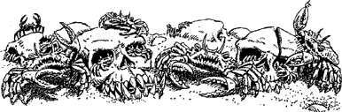

235
Drawing on your inner strength to quell your fears of what may lie ahead, you descend the ridge and approach the great, frowning bastions of Kaag. Through the swirling dust you see a pitted road which leads to the East Gate. Its storm-blown surface is littered with corpses, bleached bones, rusted weapons, and armour. Crab-like scavengers scuttle among the debris, fighting for scraps to feed their young which nest in thousands of empty Giak skulls half-buried in the ground.
{kind=link}

Shielded from detection by the storm and your Kai skills, you reach the breached east wall unobserved.
Swiftly you climb over the rubble, which is heaped between the huge cubes of marble that were once part of this section of Kaag’s curtain-wall, and find yourself in a street lined with decaying halls and slum dwellings. A dun pall of choking smoke hovers above this quarter, which reeks of iron and sulphur. Moving among the ruins you see a ragged group of Giaks, led by a Gourgaz clad in a shirt of mail. They halt for a few moments, and then the Gourgaz hisses an order and they continue at a lumbering pace, heading south. You notice that their tattered blue-green uniforms all bear the emblem of a broken skull.
If you wish to follow these troops, turn to 185.
If you choose to avoid them by heading in the opposite direction, turn to 104.